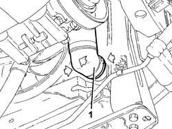
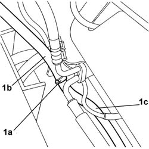
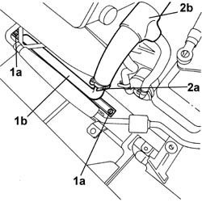

1088D16 RIGID PIPE between radiator hoses and thermostat - R.R.
- Path
- Procedures > 10 ENGINE > 1088 ENGINE COOLING > 1088D COOLANT HOSES AND PIPES > 1088D16 RIGID PIPE between radiator hoses and thermostat - R.R.
- Kind
- repair procedure (removal / refitting; the operation number is the code)
- Applies to
- engines: 3.0 V6, 3.2 V6; all production periods
- Interactive page
- https://sloeber94.github.io/elrnDB-lThss/en/#/192719
Applies to: engines: 3.0 V6, 3.2 V6; all production periods
 Removing
Removing
 Refitting
Refitting- Position the vehicle on a lift.
- Make sure that the ignition key is in the OFF position, then disconnect the negative battery lead.
See in Op. 1088E10 Radiator cooling FAN - R.R.
- Raise the vehicle.
- Prepare a suitable container for collecting the engine coolant.
1. Acting as illustrated in the diagram on the band, disconnect the rapid connector for the lower radiator pipe and leave the system to drain.

Applies to: engines: 3.0 V6, 3.2 V6; all production periods
- Lower the vehicle.
1. Open the band (1a) retaining the flexible pipe (1b) from the tank to the rigid section (1c) and disconnect it.

Applies to: engines: 3.0 V6, 3.2 V6; all production periods
1. Undo the two nuts (1a) for the brackets securing the rigid coolant pipe (1b) to the chassis.
2. Open the band (2a) retaining the rigid section of the coolant pipe to the flexible section (2b) and remove the rigid section.

Applies to: engines: 3.0 V6, 3.2 V6; all production periods
Refitting
Removing- Position the rigid section of the pipe, then close the band retaining the rigid section of the cooling pipe to the flexible section.
- Tighten the nuts fixing the bracket securing the rigid section of the coolant pipe to the chassis.
- Connect the flexible pipe from the tank to the rigid section, then close the retaining band.
- Raise the vehicle.
- Connect the rapid connector for the lower radiator pipe.
- Lower the vehicle.
See in Op. 1088E10 Radiator cooling FAN - R.R.
- [0010T21]
- Connect the negative battery terminal and position the cover on the left hand side of the luggage compartment.
- Remove the vehicle from the lift.